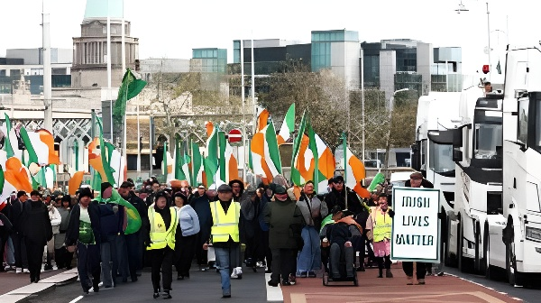

En avril 2026, l'Irlande a été traversée par le mouvement de contestation sociale le plus intense depuis la fondation de l'État libre irlandais au début du XXe siècle. Agriculteurs et transporteurs routiers, étranglés par une hausse brutale des prix du carburant consécutive à la fermeture du détroit d'Hormuz, ont paralysé autoroutes, ports et dépôts pétroliers pendant plus de deux semaines — révélant les fractures profondes d'une économie insulaire hyperdépendante aux importations d'hydrocarbures.
Tout commence le 28 février 2026, lorsque les États-Unis et Israël lancent leurs premières frappes sur l'Iran. En riposte, Téhéran ferme le détroit d'Hormuz, ce goulet d'étranglement par lequel transitent en temps normal 20% des exportations mondiales de pétrole et de gaz naturel liquéfié. Le choc sur les marchés est immédiat : le prix du baril s'envole, entraînant avec lui le coût à la pompe dans toute l'Europe.
L'Irlande se retrouve dans une position particulièrement vulnérable : île à l'extrémité occidentale de l'Europe, elle dépend massivement des importations de produits pétroliers, acheminés en grande partie par voie maritime. Sa seule raffinerie, à Whitegate dans le comté de Cork, ne couvre qu'une fraction des besoins nationaux. Lorsque les prix à la pompe bondissent de près de 28% pour le diesel en quelques semaines, les secteurs agricole et du transport routier — grands consommateurs de carburant — sont frappés de plein fouet.
Premières frappes américano-israéliennes sur l'Iran. L'Iran ferme le détroit d'Hormuz. Le prix du brut monte en flèche sur les marchés internationaux.
Face à la flambée des prix du carburant liée à la guerre en Iran, le gouvernement irlandais réduit les accises sur le diesel (−20 ct/L) et l'essence (−15 ct/L) jusqu'à fin mai.
Des agriculteurs et transporteurs commencent à bloquer routes nationales et dépôts pétroliers à travers tout le pays. La raffinerie de Whitegate est bloquée.
Des tracteurs envahissent l'O'Connell Street à Dublin, artère symbolique du cœur de la capitale. Les images font le tour du monde. La comparaison avec les Gilets jaunes français s'impose dans tous les médias.
Le gouvernement déploie l'armée irlandaise pour dégager les dépôts de carburant et les infrastructures critiques. Des interpellations ont lieu en plusieurs points du pays.
Révélation : 36 nouveaux corps de nourrissons découverts sur le site de l'ancien foyer mère-enfant de Tuam (comté de Galway) — une actualité qui capte l'attention et complexifie le contexte.
Des véhicules-citernes retrouvent accès à la raffinerie de Whitegate après une opération conjointe Gardaí / Défense irlandaise. Quelques blocages de routes subsistent en province.
Le gouvernement survit à une motion de défiance déposée par le Sinn Féin. Un ministre junior, Michael Healy-Rae, démissionne au lendemain du vote, acclamé par les manifestants devant Leinster House.
Derrière la soudaineté apparente du mouvement se lisent des tensions structurelles bien plus profondes. L'agriculture irlandaise, centrée sur l'élevage laitier et bovin destiné à l'exportation, repose sur un modèle économique d'une grande fragilité : prestataires de services agricoles, entrepreneurs de travaux ruraux et transporteurs sont souvent employés dans des conditions précaires, à la tâche ou de façon saisonnière, sans filet de sécurité suffisant face à des hausses de charges brutales.
Patrick Bresnihan, chercheur à l'Université de Maynooth, a rappelé que l'agriculture représente la principale industrie indigène irlandaise, celle qui structure la culture politique de la majorité de la population rurale — pourtant largement absente du débat public urbain. Le fossé entre l'Irlande des métropoles, portée par la croissance des multinationales technologiques et pharmaceutiques, et l'Irlande des campagnes, soumise aux aléas des marchés mondiaux des matières premières, a rarement été aussi visible.
La coalition Fianna Fáil–Fine Gael–Indépendants, conduite par le Taoiseach Micheál Martin, a réagi en annonçant un ensemble de mesures de soutien évaluées à près de 600 millions de dollars. Ces mesures comprennent une réduction de 10% sur le litre de diesel et d'essence, ainsi que le report de la taxe carbone planifiée. Mais l'opposition, menée par le Sinn Féin, a reproché au gouvernement d'avoir agi bien trop tardivement, laissant la situation se dégrader pendant plus d'une semaine avant d'intervenir.
Le vote de confiance du 15 avril a été une victoire à la Pyrrhus pour le gouvernement : la coalition l'a emporté, mais la démission de Michael Healy-Rae — élu du Kerry et figure rurale emblématique — a illustré l'ampleur des fissures internes. Des sources gouvernementales ont reconnu en privé que la communication de crise avait été défaillante dans les premiers jours, l'exécutif paraissant déconnecté face à la colère des transporteurs.
| Mesure annoncée | Bénéficiaires | Montant / Nature |
|---|---|---|
| Réduction accises carburant | Tous automobilistes | −10% diesel & essence |
| Report taxe carbone | Secteur agricole & transport | Report sine die |
| Aide alimentaire & pêche | IAA et pêcheurs | Enveloppe dédiée |
| Total annoncé | Économie nationale | ~600 M$ USD |
« Il y a une incompréhension abyssale de la structure et de la dynamique de l'économie agricole irlandaise — ce qui est stupéfiant quand on sait que c'est notre plus grande industrie indigène. »
— Patrick Bresnihan, chercheur, Université de Maynooth, avril 2026« Ce que nous vivons est peut-être l'insurrection la plus grave depuis la fondation de l'État irlandais dans les années 1920. »
— Commentateur politique irlandais, RTÉ, avril 2026Les protestations ont mis en lumière l'existence d'un vivier électoral rural, méfiant des élites dublinoises, potentiellement récupérable par des forces populistes. Des voix ont comparé la situation à la montée en puissance de l'AfD en Allemagne, du Rassemblement national en France ou de Vox en Espagne — tous des partis qui ont su capitaliser sur le mécontentement agricole et routier. En Irlande, le parti Aontú — seul parti nationaliste implanté dans les deux juridictions de l'île — n'a obtenu que deux sièges aux dernières élections de 2024, mais quelques Teachta Dála indépendants élus sur des programmes ruraux ou anti-immigration détiennent désormais la balance du pouvoir à Leinster House.
Si les manifestations semblent s'essouffler à la mi-avril, leur impact politique risque d'être durable : le Sinn Féin a habilement exploité la crise pour consolider son image de parti de l'opposition responsable, tandis que la coalition au pouvoir sort fragilisée, à quelques mois d'une présidence irlandaise de l'Union européenne attendue dès juillet 2026.
La crise du carburant d'avril 2026 a agi comme un révélateur cruel des fragilités structurelles de l'économie irlandaise : dépendance énergétique totale vis-à-vis des importations maritimes, exposition directe aux chocs géopolitiques du Proche-Orient, et fracture grandissante entre une Irlande urbaine prospère — portée par les géants de la tech et de la pharma — et une Irlande rurale qui se sent oubliée des dividendes de la croissance. L'île qui fut longtemps présentée comme le « tigre celtique » de la mondialisation heureuse découvre que son modèle de développement, bâti sur l'ouverture et les flux internationaux, est aussi son talon d'Achille lorsque le monde se ferme.
In April 2026, Ireland experienced the most intense wave of social unrest since the foundation of the Irish Free State in the early twentieth century. Farmers and hauliers, crushed by a sharp rise in fuel prices triggered by the closure of the Strait of Hormuz, blockaded motorways, ports and fuel depots for over two weeks — exposing the deep structural vulnerabilities of an island economy wholly dependent on imported hydrocarbons.
The crisis began on 28 February 2026, when the United States and Israel launched their first strikes on Iran. In retaliation, Tehran closed the Strait of Hormuz — the narrow chokepoint through which 20% of the world's oil and liquefied natural gas normally transits. The shock on global markets was immediate: oil prices surged, dragging pump prices upward across Europe.
Ireland found itself in a particularly exposed position. An island on the western edge of Europe, it relies entirely on maritime imports for petroleum products. Its only refinery, at Whitegate in County Cork, meets only a fraction of national demand. When diesel prices at the pump jumped by nearly 28% in a matter of weeks, the agricultural and haulage sectors — heavy fuel consumers operating on thin margins — were hit hardest.
US-Israeli strikes on Iran. Tehran closes the Strait of Hormuz. Global oil prices spike.
Irish government announces excise duty cuts — 20 cents per litre on diesel, 15 cents on petrol — through to end of May, in response to rising fuel costs.
Farmers and hauliers begin blocking national roads and fuel depots. The Whitegate refinery in County Cork is blockaded.
Tractors converge on O'Connell Street in central Dublin. Images broadcast globally draw immediate comparisons with France's Yellow Vest movement.
The Irish Defence Forces are deployed to clear fuel depots and critical infrastructure. Arrests made at multiple sites across the country.
Fuel tankers regain access to Whitegate refinery following a joint Gardaí and Army operation. Scattered blockades remain in place in rural areas.
Government survives a Sinn Féin-tabled no-confidence motion. Junior minister Michael Healy-Rae resigns in solidarity with protesters, to cheers outside Leinster House.
Beneath the apparent suddenness of the movement lie far deeper structural tensions. Irish agriculture, centred on grass-fed dairy and beef production for export, rests on a fragile economic model: agricultural contractors and hauliers often work on precarious, seasonal, or hourly terms, with no adequate buffer against sudden cost shocks. Patrick Bresnihan, a researcher at Maynooth University, noted that farming remains Ireland's largest indigenous industry — one that shapes the political culture of the majority of the rural population — yet is poorly understood in urban public debate.
The chasm between an urban Ireland propelled by multinational tech and pharmaceutical giants and a rural Ireland exposed to the volatility of global commodity markets has rarely been so starkly visible. Critics argue that successive governments have overly focused on attracting foreign direct investment while neglecting the structural inequalities of the domestic agri-economy.
The Fianna Fáil–Fine Gael–Independents coalition led by Taoiseach Micheál Martin announced a package of roughly $600 million in relief measures, including a 10% reduction on diesel and petrol and the postponement of a planned carbon tax. The opposition, led by Sinn Féin, accused the government of acting far too slowly, allowing the situation to deteriorate for over a week before intervening meaningfully.
The 15 April confidence vote was a pyrrhic victory: the coalition survived, but Michael Healy-Rae's resignation illustrated the depth of internal fractures. Government sources privately acknowledged that crisis communication had been poorly handled in the opening days, with the executive appearing disconnected from the anger spreading across rural Ireland.
| Measure announced | Beneficiaries | Amount / Nature |
|---|---|---|
| Fuel excise duty cuts | All motorists | −10% diesel & petrol |
| Carbon tax postponement | Agriculture & transport | Indefinite deferral |
| Food production & fishing aid | Agri-food & fisheries | Dedicated envelope |
| Total package | National economy | ~$600M USD |
"There is so little understanding about the structure and dynamics of the agricultural economy in Ireland — which is astonishing given it's our biggest indigenous industry."
— Patrick Bresnihan, researcher, Maynooth University, April 2026"This is arguably the most serious insurrection since the southern Irish state was created in the 1920s."
— Irish political commentator, RTÉ, April 2026The protests illuminated a restive rural electorate — distrustful of Dublin elites — that could potentially be captured by populist forces. Commentators drew comparisons with the AfD in Germany, the Rassemblement National in France and Vox in Spain — parties that have successfully channelled agrarian and haulage discontent into electoral gains. In Ireland, Aontú — the only all-island nationalist party — secured just two parliamentary seats in the 2024 elections, but a handful of independent TDs elected on rural or anti-immigration platforms now hold the balance of power at Leinster House.
Even as the blockades began to wind down in mid-April, their political consequences look set to endure. Sinn Féin adroitly exploited the crisis to cement its image as a credible opposition force, while the ruling coalition emerged weakened — a significant liability ahead of Ireland's assumption of the EU Council Presidency, due to begin in July 2026.
The April 2026 fuel crisis acted as a harsh diagnostic of Ireland's structural fragilities: total energy dependency on maritime imports, direct exposure to Middle Eastern geopolitical shocks, and a deepening divide between a prosperous urban Ireland boosted by tech and pharma multinationals, and a rural Ireland that feels left behind by the dividends of growth. The island once celebrated as the Celtic Tiger of happy globalisation is discovering that the openness and international flows on which its development model was built are also its Achilles heel when the world turns inward.